前回に引き続き、Darknet を使った 機械学習 の記事です。
はじめに
前回、Windows に Darknet を導入して、動作確認しました。
https://noitaro.github.io/windows-darknet/
今回は、その Darknet で ツムを識別できる オリジナルの学習モデルを作成します。
ネット記事によってマチマチなので、１つの参考例として読み進めて下さい。
ファイル構成
Darknet は Dドライブ直下に解凍しました。
cfgフォルダ内に taskフォルダを作って、その中に必要なものを入れていきます。
最終的なファイル構成は、こんな感じになります。
- D:\darknet\build\darknet\x64\cfg\
- ┗ task\
- ┣ backup\
- ┣ datasets\
- ┣ Screenshot_20191002-213559.jpg
- ┣ Screenshot_20191002-213559.txt
- ┣ Screenshot_20191002-213609.jpg
- ┣ Screenshot_20191002-213609.txt
- ┗ …
- ┣ classes.txt
- ┣ datasets.data
- ┣ test.txt
- ┣ train.txt
- ┗ yolov3-voc.cfg
- ┗ task\
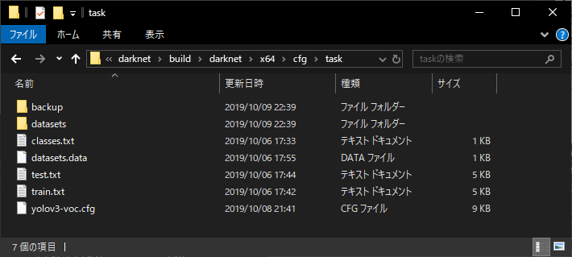
D:\darknet\build\darknet\x64\cfg\task\
task フォルダ
task フォルダから作成して行きます。
こうすることで、機械学習に必要なものがこのフォルダの中に揃うことになります。
管理が簡単です。
backup フォルダ
機械学習をしていく過程で、学習済みモデルが溜まっていくフォルダになります。
実行時にフォルダだけが必要なので、中身は空っぽです。
datasets フォルダ
学習用画像と、その画像のラベリングが書かれているテキストファイルを入れます。
画像とテキストファイルの名前は揃えておきます。
labelImg ツールで出力できるので、出力したものをそのまま放り込めば大丈夫です。
classes.txt
ラベリングした時に決めたクラス名を、1行ずつ書いたテキストファイルです。
こちらも labelImg ツールで出力できるので、出力したものをそのまま放り込めば大丈夫です。
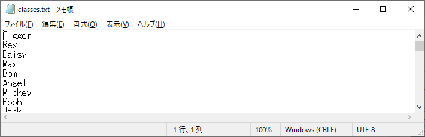
datasets.data
機械学習に必要なファイルの場所を記述したファイルです。
1 | classes= 51 |
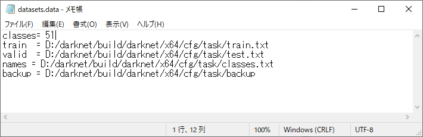
「classes=51」は「classes.txt」内に 51 個のクラスを識別するように設定したので 51 になります。
test.txt
テスト用の学習用画像のある場所を記述したファイルです。
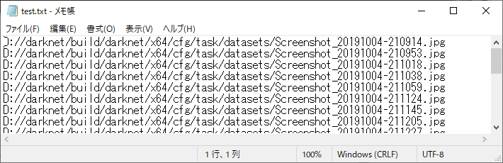
train.txt
訓練用の学習用画像のある場所を記述したファイルです。
中身は test.txt と同じで問題ないです。
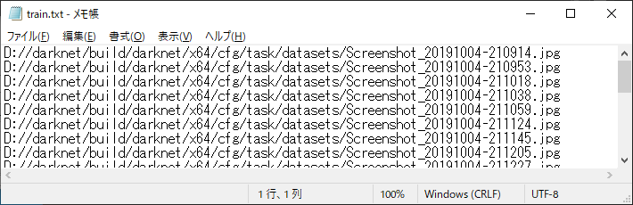
yolov3-voc.cfg
「D:\darknet\build\darknet\x64\」フォルダにある「yolov3-voc.cfg」をコピーして「cfg\task\」に入れます。
で、コピーした方をテキストエディタで開いて編集します。
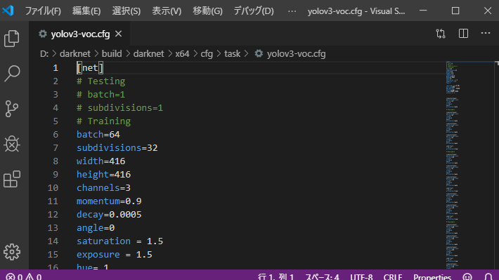
まず、GPUをどれだけ使用して機械学習をするか、の設定を変えます。
6行目の「batch=64」を「batch=32」に変更します。
7行目の「subdivisions=32」を「subdivisions=16」に変更します。
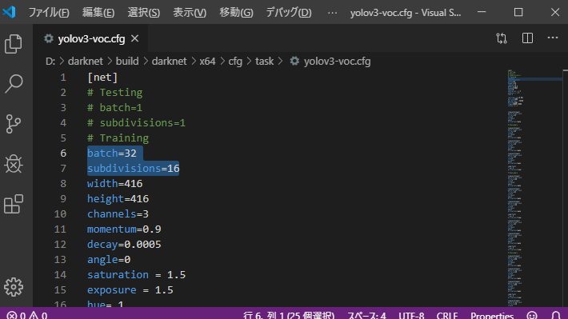
この値は、搭載してあるGPUの性能によって変わってきます。
高性能なGPUなら数値を高くしても問題ありません。
逆に、性能が低くて、機械学習中に 「current avg = nan」になってしまう場合は、低く設定しておきます。
次に、学習パラメーターの設定を変えます。
テキスト内検索で「classes=20」と「filters=75」を探して、見つかった箇所を変更します。
それぞれ3箇所ずつ見つかると思うので、計6箇所の変更になります。
「classes.txt」内に 51 個のクラスを識別するように設定したので「classes=51」に変更します。
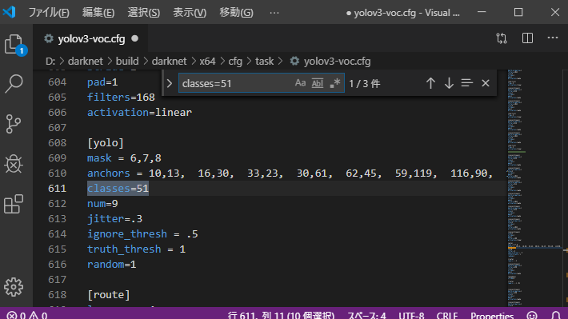
filters は「(classes + 5) * 3」の値に変更します。
今回は、classes=51 なので「(51 + 5) * 3 = 168」の168 を filters に設定します。
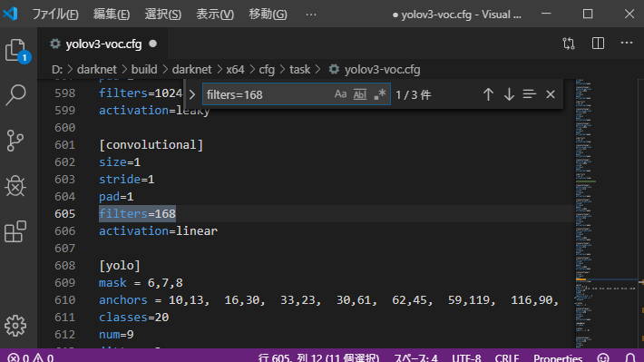
機械学習
設定は以上となります。
では、早速 機械学習 をしていきます。
「darknet.exe」があるフォルダ内で Shift キーを押しながらマウスの右クリックをして、Windows PowerShell を開きます。
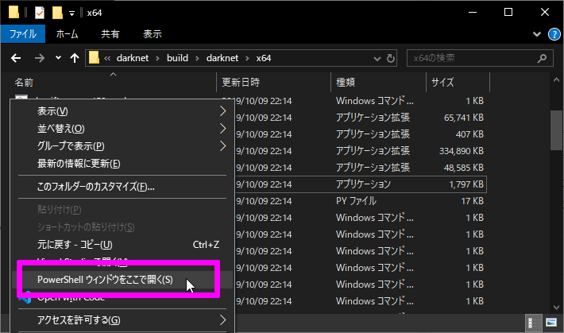
PowerShell に下記コマンドを入力して機械学習を開始させます。
1 | ./darknet detector train ./cfg/task/datasets.data cfg/task/yolov3-voc.cfg |
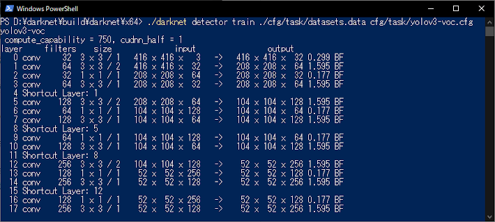
開始と同時にグラフも表示されるので、左下の current avg loss の値を眺めながら、結果を見守ります。
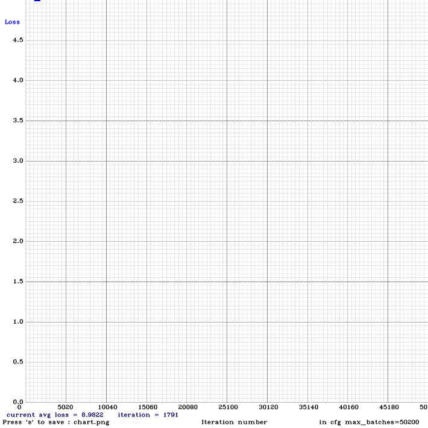
機械学習を途中でやめても、途中から再開することもできます。
その場合は、再開したい機械学習済みモデルを一緒に読み込ませます。
1 | ./darknet detector train ./cfg/task/datasets.data cfg/task/yolov3-voc.cfg cfg/task/backup/yolov3-voc_last.weights |
「yolov3-voc_last.weights」が前回最後の機械学習済みモデルになるので、一緒に読み込ませます。
結果
とりあえず、10,000 回 学習をさせてみました。7時間ほどかかりました。
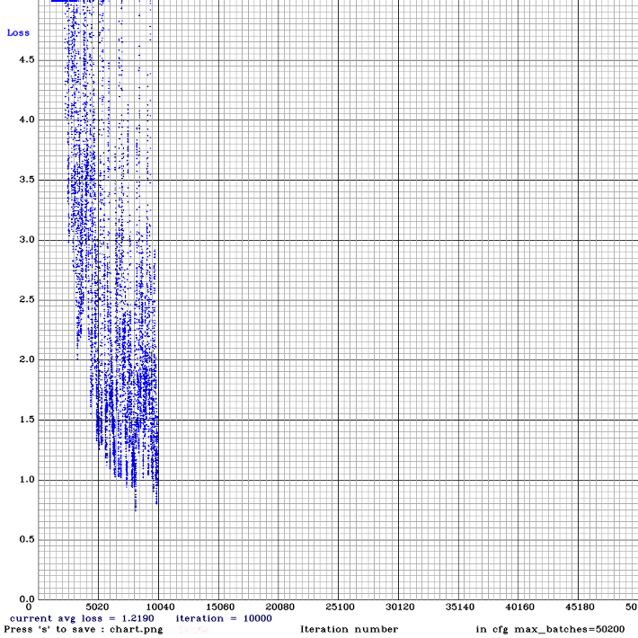
左下の iteration が学習回数です。
振れ幅が大きいですが、目標の 1.0 を数回下回っているので、いいんじゃないでしょうか。
よく分かってないですけどね。
本気で学習させるなら、一週間ぐらいかけて 100,000 回学習し、ほぼ 0.5 を下回らせるのがいいみたいです。
確認
成果を確認します。
1 | ./darknet detector test cfg\task\datasets.data cfg\task\yolov3-voc.cfg cfg\task\backup\yolov3-voc_last.weights D:\Python\tumutumu\inputdata\Screenshot_20191004-212745.png |
「train」を「test」に変えて、学習に使っていない画像で確認してみました。
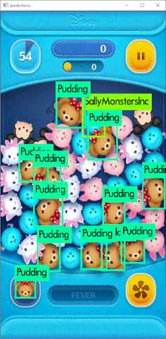
半分も認識してませんね。
おわりに
まだまだ学習が必要だと思います。
ちゃんと学習して、半分以上認識できるようになったら、ツムツムの自動化に入りたいと思います。